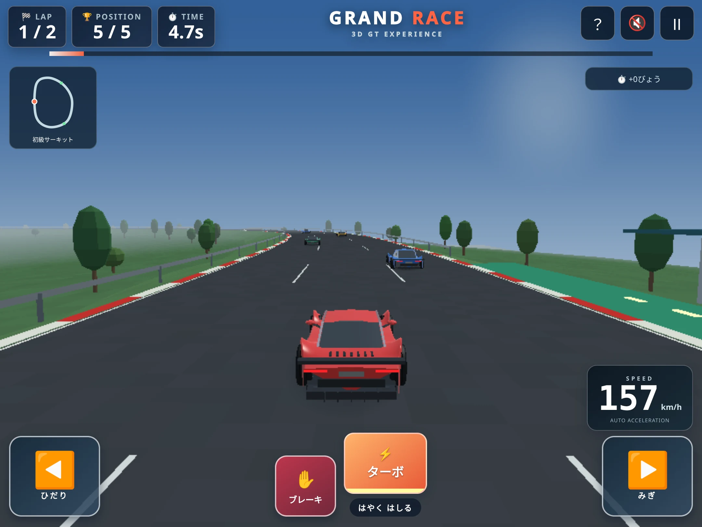
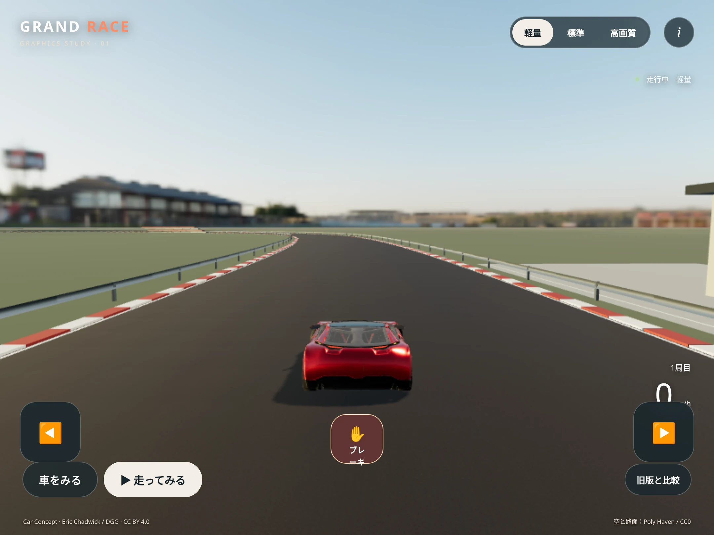

CAR CONCEPT / C01
スポーツカー1台と、初級サーキット。光の映り込み、路面、影を見てみよう。
PREPARING THE CIRCUIT
準備中
エラー内容は「計測と診断」で確認できます。
この端末での実測です。端末情報やデータを自動送信しません。
目標は30〜60fps。iPad第9世代の性能は実機で確認してください。フレーム間隔はGPU処理時間ではありません。
同じC01の走行約150m地点、後方カメラ。Linux上のChromiumで記録した画面です。実機の画質やFPSは、このページの3D走行で確認してください。

